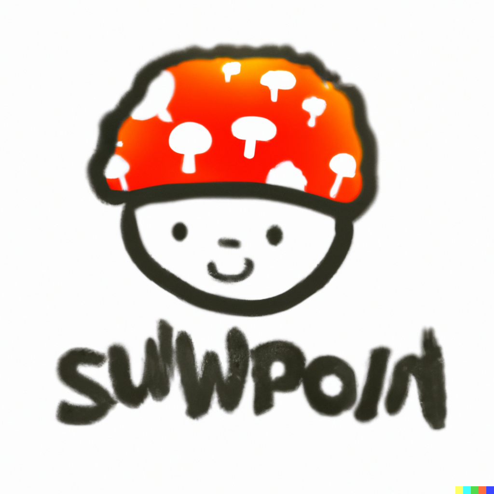
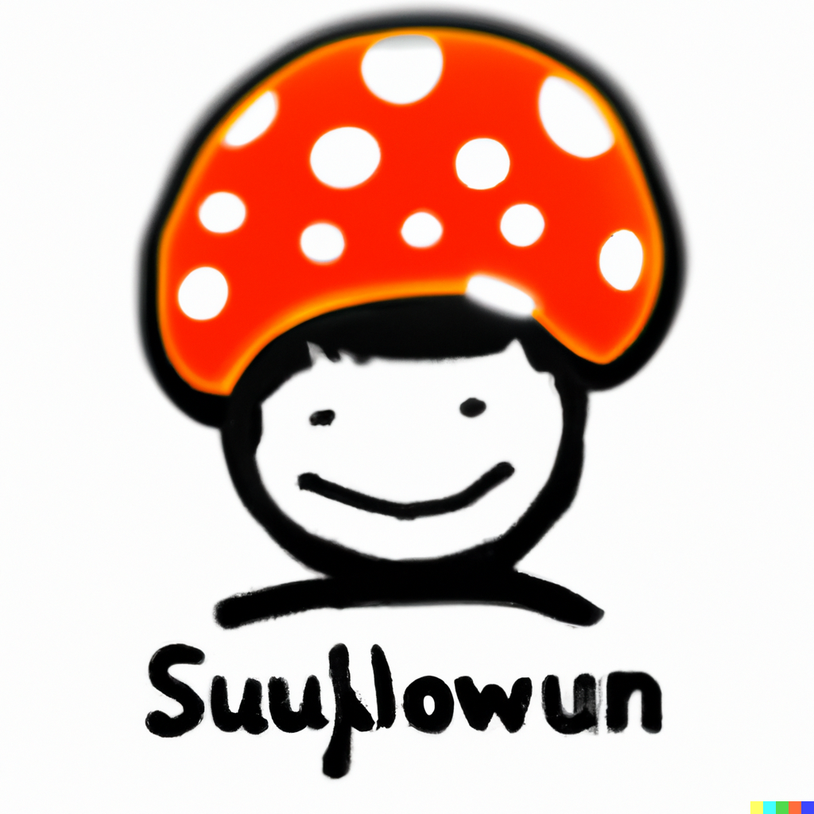
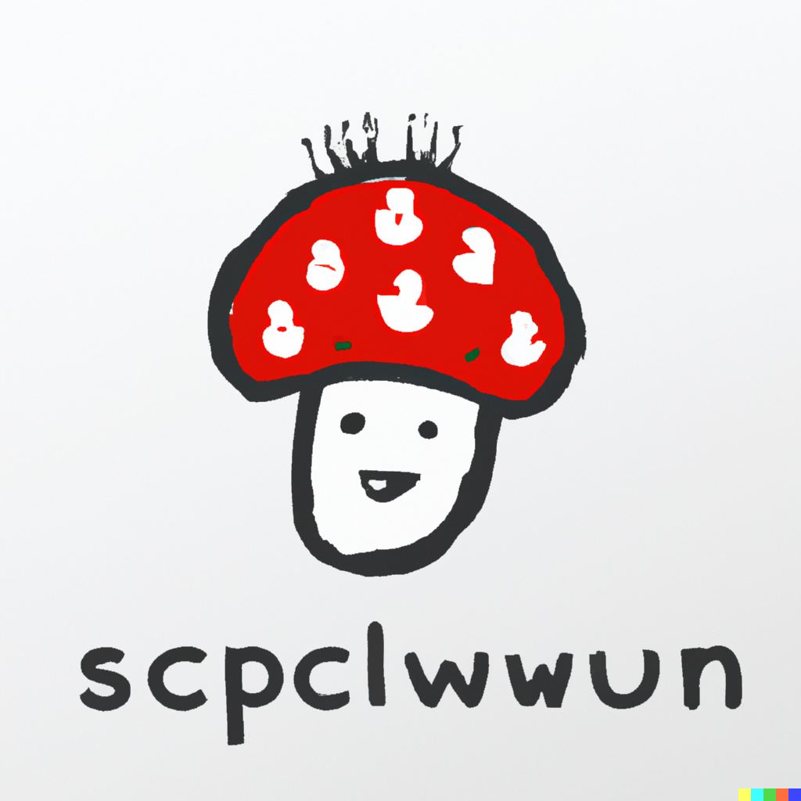
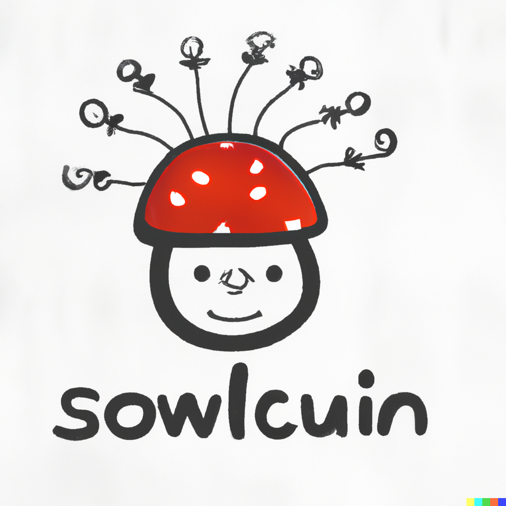
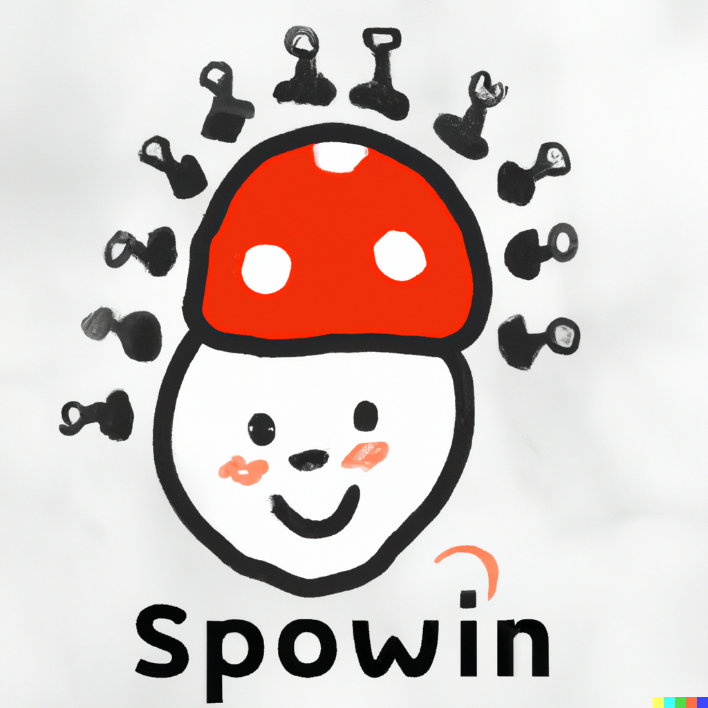

At MyCelium, we believe in the power of connection—much like the intricate networks of fungi that thrive beneath our feet. Our platform is designed to bring people together, fostering relationships that nurture personal and communal growth.
Join our Fungal Network: Dive into a vibrant community where every interaction strengthens the roots of friendship and collaboration. Just as fungi communicate and share resources, you can exchange ideas, support one another, and cultivate meaningful connections.
Discover Your Tribe: Whether you’re seeking like-minded individuals, collaborative projects, or simply a place to share your passions, MyCelium is your go-to space. Explore groups that resonate with your interests and expand your network organically.
Grow Together: Engage in discussions, share experiences, and collaborate on creative endeavors. At MyCelium, every member contributes to the collective wisdom of the network, helping each other flourish and thrive.
Join Us Today Embrace the power of connection and be part of a thriving community that celebrates growth, creativity, and shared experiences. Together, we can create a rich tapestry of connections that benefits us all.
Introducing Stuwyoon, our insightful network analyst who thrives on connecting the dots in the vibrant world of social media! With a keen eye for data and a passion for understanding user behavior, xym plays a crucial role in helping MyCelium grow and flourish.
Outside of analyzing data, you can find Stuwyoon exploring local parks, foraging for mushrooms, or sharing knowledge about the fascinating world of fungi. Join Stuwyoon in celebrating the connections that make MyCelium a truly special place to grow and thrive!
Meet Sup Wan, our dedicated Customer Experience Champion, who is passionate about creating a welcoming and supportive environment for all MyCelium users. With a flair for problem-solving and a genuine love for community, she ensures that every interaction feels personal and valued.
Sup brings a wealth of experience in customer relations, always ready to listen and adapt to user feedback. Her mission is to cultivate a space where everyone feels heard and connected, just like the mycelium that links and nourishes ecosystems.
When she’s not championing customer experiences, you can find Sup exploring local markets for fresh ingredients or trying out new mushroom dishes in her kitchen. With her vibrant spirit and commitment to community, Sup Wan is the heart of MyCelium, helping our users thrive!
Meet Suyplowp, our meticulous tester who ensures that every feature at MyCelium is as smooth and seamless as possible! With a keen eye for detail and a passion for quality, Suyplowp plays a vital role in enhancing user experience, identifying potential issues before they reach our users.
Outside of testing, Suyplowp is an avid gamer, diving into epic D&D campaigns and strategizing in intense Warhammer battles. You’ll often find zir immersed in the latest Magic: The Gathering set or hosting board game nights, where creativity and friendly competition come to life. With a blend of analytical prowess and a love for all things nerdy, Suyplowp is a crucial part of the MyCelium adventure!
Introducing Stupuwn, our talented main artist who brings the enchanting world of MyCelium to life! With a flair for creativity and a passion for visual storytelling, Stupuwn crafts captivating designs that resonate with our community and reflect the magic of mushrooms and fungi.
When not creating stunning artwork, Stupuwn loves attending ren-fairs, where they immerse themselves in medieval culture and craftsmanship. Cyr also enjoys bringing characters to life through cosplay, often showcasing impressive costumes that blend artistry and imagination. With a unique vision and an adventurous spirit, Stupuwn adds a vibrant touch to everything MyCelium creates!

Suwpoin

Suupowun

Scpclwwun

Sowlcuin

Spowin